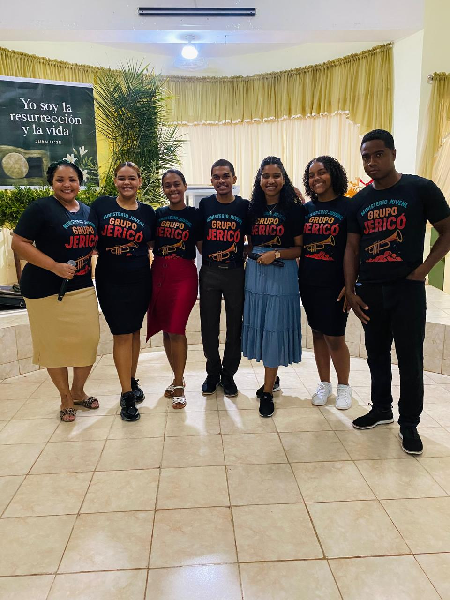

Jóvenes Apasionados por Cristo, Transformando su Generación
El Ministerio "Embajadores de Cristo" es el corazón vibrante de la juventud de las Asambleas de Dios. Nos
dedicamos a guiar a adolescentes y jóvenes en su caminar con Jesús, fomentando un ambiente donde puedan
crecer espiritualmente, desarrollar amistades duraderas y descubrir su propósito divino. Creemos que la
juventud no es la iglesia del futuro, sino la iglesia de hoy.

Nuestra Visión
Nuestra visión es formar una generación de jóvenes radicales, influyentes y comprometidos con el Reino de
Dios, que impacten positivamente su entorno a través de un testimonio auténtico y una vida dedicada a
Cristo. Queremos ver a cada joven siendo un verdadero embajador de Cristo en su escuela, universidad,
trabajo y comunidad.
- Crecimiento Espiritual: Desafiar a los jóvenes a tener una relación profunda y personal
con Dios a través del estudio de la Biblia, la oración y la adoración.
- Comunidad Auténtica: Crear un espacio seguro y divertido donde los jóvenes puedan
formar amistades significativas y sentirse parte de una familia en la fe.
- Liderazgo y Servicio: Capacitar a los jóvenes para que desarrollen sus talentos y
sirvan en diferentes áreas de la iglesia y la sociedad.
- Evangelismo y Misiones: Inspirar a los jóvenes a compartir el evangelio y ser luz en un
mundo que necesita esperanza.
Actividades que te Encantarán
Ofrecemos una agenda variada y dinámica para la juventud, incluyendo:
- Reuniones semanales con mensajes relevantes, alabanza enérgica y tiempos de compañerismo.
- Eventos sociales, deportivos y recreativos.
- Conferencias y campamentos de jóvenes.
- Proyectos de servicio comunitario y misiones de corto plazo.
- Grupos pequeños de estudio y discipulado.
Nuestro Liderazgo Juvenil
Conozca a nuestro equipo de liderazgo, dedicado a guiar a nuestro ministerio juvenil con sabiduría,
visión y conforme a los principios bíblicos. Cada uno de ellos sirve con un corazón apasionado por Dios y
por el crecimiento de su pueblo.

Ana Sosa Martinez
Presidenta
Cristian
Vice - Presidenta
Raquel Abreu Guerrero
Secretaria
Para más información sobre nuestra estructura de liderazgo y los pastores que nos sirven, por favor
contacte nuestra oficina central o revise nuestros estatutos disponibles en la sección de Recursos.
Galería de Fotos y Videos
Reviva los momentos más memorables de nuestros eventos, conferencias y actividades a través de nuestra
galería visual. Próximamente encontrará fotos y videos inspiradores que capturan la esencia de nuestro
ministerio juvenil.